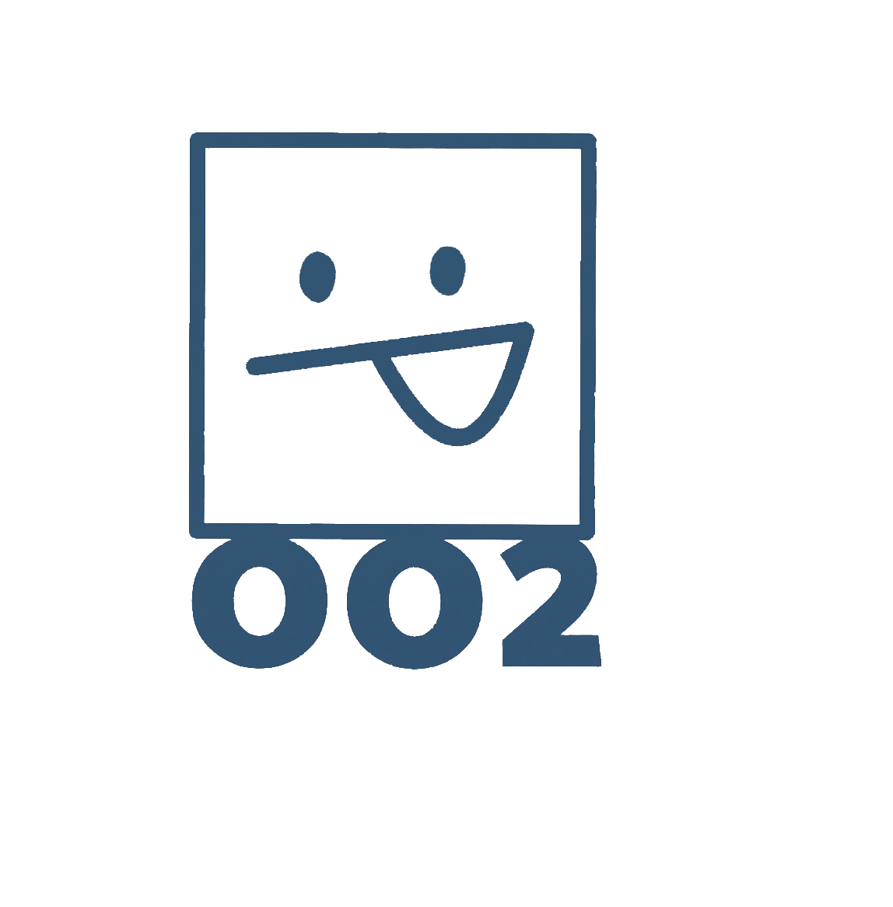

주유소
주차장
지도
스카이뷰

로그인
부산광역시
시/군/구
강서구
금정구
기장군
남구
동구
동래구
부산진구
북구
사상구
사하구
서구
수영구
연제구
영도구
중구
해운대구
읍/면/동
조회
주차장이름
평점 : ★★★★☆
경유
휘발유
동구
에서
3
번째로 싼집!
오늘의 유가 정보
경유
2000
휘발유
3500
+102원
+12원
방문자 리뷰
✍🏻
리뷰 작성하기
☺️😊😥
★
★
★
★
★
등록
닫기